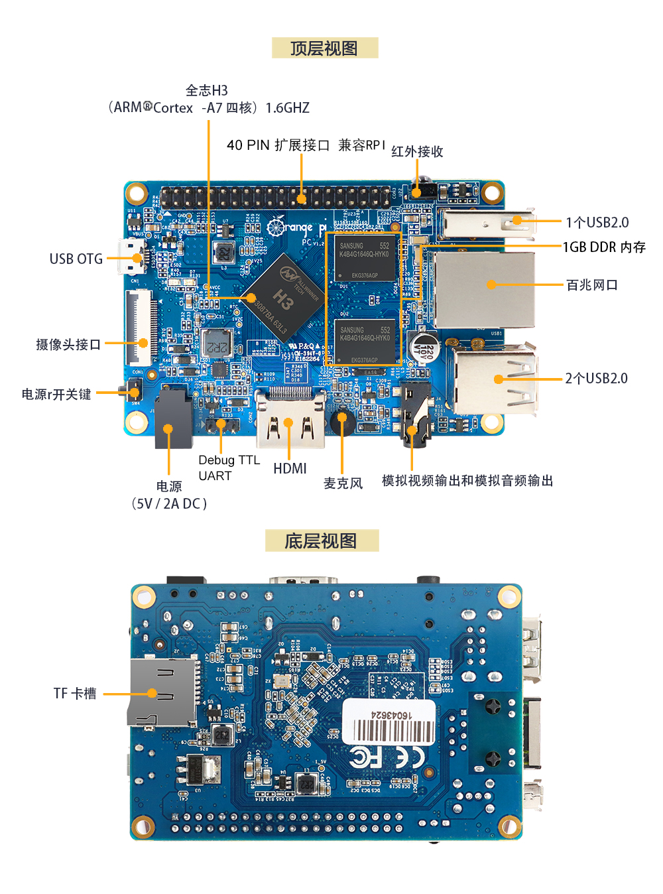
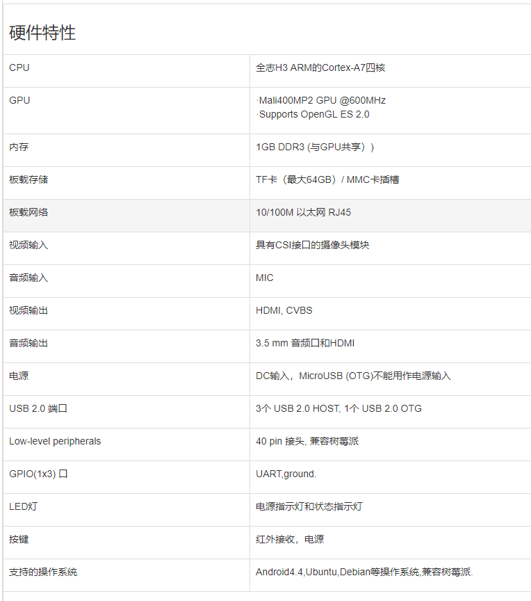
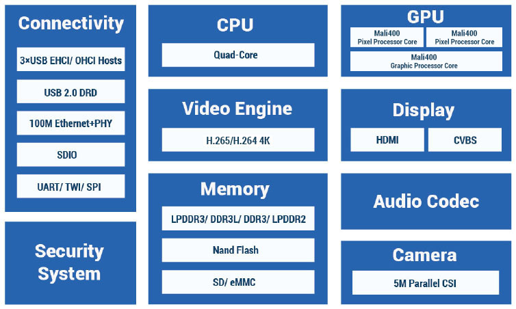
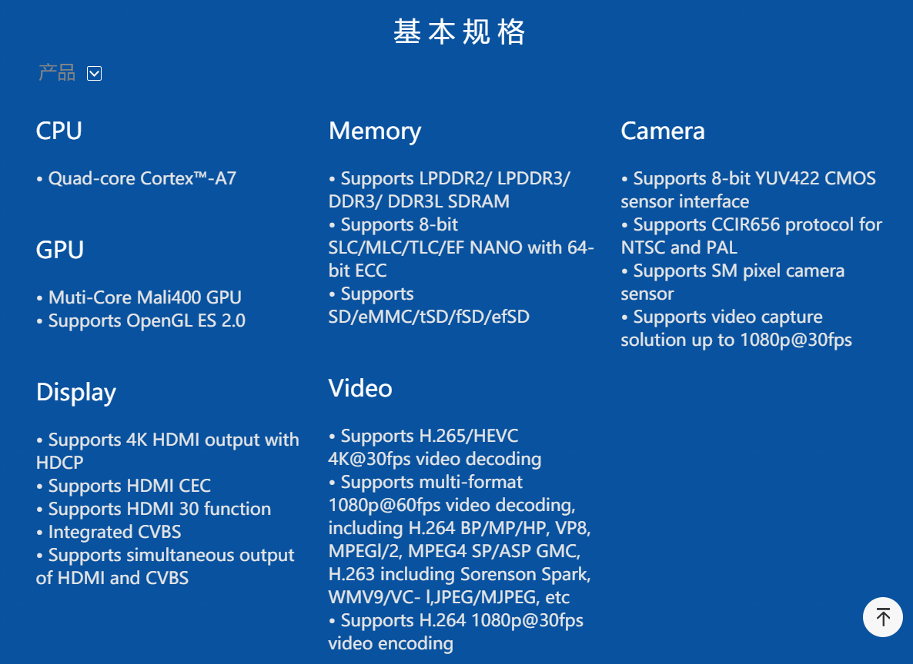
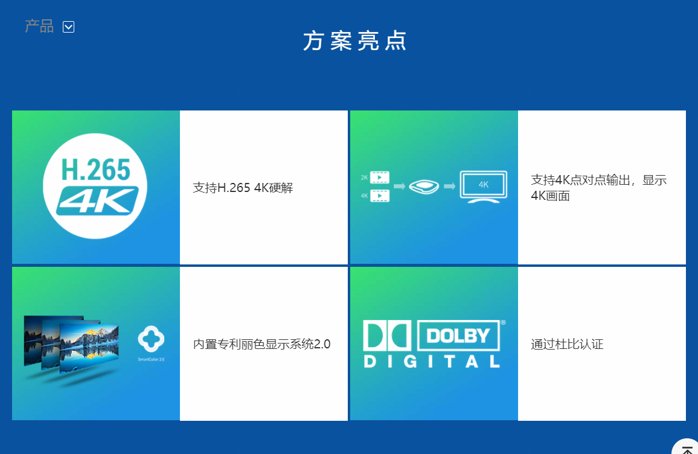

简介
Orangepi PC
香橙派平板是一款开源的单板电脑，新一代的arm开发板,它可以运行Android4.4、Ubuntu、Debian等操作系统,兼容树莓派。香橙派平板使用全志H3系统级芯片，同时拥有1GB DDR3 内存，官方网站：http://www.orangepi.cn/orangepipc/index_cn.html


Orangepi PC是基于全志H3的开源开发板，全志H3主要用于机顶盒产品，具体参数：



Armbian系统
Armbian是轻量级的Debian系统和为ARM开发板专门发行并重新编译的Ubuntu系统。关于armbian系统具体介绍可以查看网站https://www.armbian.com/
主要特点：
- Armbian使用重新编译的Debian Wheezy，Jessie或Ubuntu，它们可靠性极佳。
- 安装映像降低到实际的数据大小。
- root密码是1234。第一次登陆时你会被提示更改密码并创建登录用户。
- 第一次启动需要较长时间（可能长达几分钟）比正常启动（20S）要慢。因为它需要更新软件包列表，获取SSH密钥和扩展系统以适应你的SD卡分区，而且它可能会自动重新启动一次。
- 可以切换内核以适应其它系统。[1]
- 桌面环境可以升级准备。
- NAND，SATA，eMMC和USB安装包含脚本（NAND SATA安装）。
- 串行控制台启用。
- 启用自动安全更新下载的系统。升级也可以通过apt-get等方法。
支持的芯片
全志 A10, A20, A31, H3, A64
Amlogic S805
Amlogic S905
Actionsemi S500
飞思卡尔/ NXP iMx6
Marvell Armada A380
三星Exynos 5422
RK3288
支持的ARM板
Beelink X2,
Orange Pi PC plus, Orange Pi Plus 2E, Orange Pi Lite, Orange Pi 2,Orange Pi One, Orange Pi PC, Orange Pi Plus 1 & 2,
Orange Pi A20,Orange Pi mini A20,Orange Pi A31S,
Roseapple Pi,
NanoPi M1,
pcDuino2, pcDuino3, pcDuino3 nano,
Odroid C0/C1/C1+, Odroid C2,Odroid XU4,
Banana Pi M2+,Banana Pi, Banana Pi M2,Banana Pi PRO,Banana Pi Plus A20,
Hummingboard,Hummingboard 2,
Clearfog,
Lemaker Guitar,
Udoo Neo,
Cubieboard 1, Cubieboard 2,
Lamobo R1,
Olimex Lime A10, Olimex Micro, Olimex Lime 2, Olimex Lime 1,
Udoo quad,
Cubox-i,
Cubietruck
编译环境
- Ubuntu 16.04 LTS 64位
- orangepi pc开发板
下载源码
源码下载地址：https://github.com/armbian/build
编译系统过程还是比较简单的
(1) 搭建开发环境
编译环境我用的是虚拟机安装的Ubuntu 16.04 64位的系统，新建虚拟机时硬盘空间要足够大，否则编译过程会被中断。我为Ubuntu分配了100G空间,当然物理硬盘占用不会达到100G，主要是为以后编译其他系统留点空间
官方提供的编译环境说明
Supported build environments:
- Ubuntu Xenial 16.04 x64 guest inside a VirtualBox or other virtualization software,
- Ubuntu Xenial 16.04 x64 guest managed by Vagrant. This uses Virtualbox (as above) but does so in an easily repeatable way. Please check the Armbian with Vagrant README for a quick start HOWTO,
- Ubuntu Xenial 16.04 x64 inside a Docker, systemd-nspawn or other container environment (example). Building full OS images inside containers may not work, so this option is mostly for the kernel compilation,
- Ubuntu Xenial 16.04 x64 running natively on a dedicated PC or a server (not recommended unless you build kernel only, for full OS images always use virtualization as outlined above),
- 20GB disk space or more and 2GB RAM or more available for the VM, container or native OS,
- superuser rights (configured sudo or root access).
(2) 开始编译
这里要注意的是网络得通畅，编译过程中会下载一下工具和源码包，一般编译下来没什么问题。我们先编译内核再编译整个系统，编译时使用root用户或者sudo
Execution1
2
3
4apt-get -y install git
git clone https://github.com/armbian/build
cd build
./compile.sh
Make sure that full path to the build script does not contain spaces.
检查所有路径不包含空格
You will be prompted with a selection menu for a build option, a board name, a kernel branch and an OS release. Please check the documentation for advanced options and additional customization.
编译过程中会有编译选项选择，板子的名称，内核和系统版本。请查看高级选项和额外定制的文档。
Build process uses caching for the compilation and the debootstrap process, so consecutive runs with similar settings will be much faster.
具体步骤：
(1)首先安装git,Ctrl+Alt+T打开终端输入下面的命令
1 | apt-get -y install git |
检查git版本
1 | git --version |

(2)下载源码，在终端中输入下面的命令
源码可以放在自己习惯的文件夹下，下面是我的1
2
3cd /home/iotts/
mkdir armbian
git clone https://github.com/armbian/build
(3)开始编译，在终端中输入下面的命令
1 | cd build |


安装编译工具完成后会进入配置编译配置界面


我们选择第二项

确定以后就开始编译内核了，编译整个系统的步骤基本类似，选择下图中的第二项
来一张编译完成的图，电脑有点慢编译时间有点长

以上就是自编译armbian系统的具体步骤